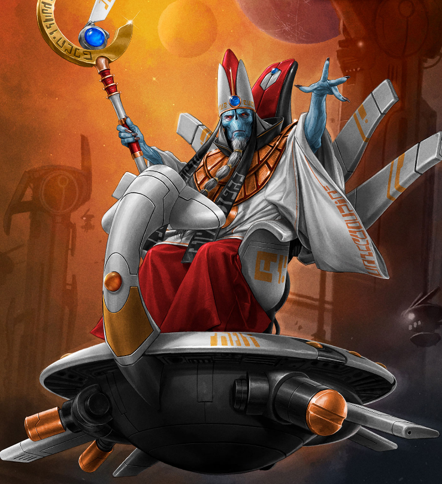

Dossier xenos 903.M41
La société T’au repose sur une division stricte en castes. Chaque individu naît dans une fonction précise, y demeure, et sert l’ensemble selon la place qui lui a été assignée.
Cette organisation est présentée comme harmonieuse. En réalité, elle constitue un système de contrôle d’une efficacité inquiétante.

ORIGINES ET NATURE
La Caste du Feu forme l’appareil militaire. Ses membres combattent, commandent les cadres de chasse et appliquent la guerre T’au avec précision, discipline et puissance technologique.
La Caste de la Terre assure la production, l’ingénierie, la construction et la recherche. Elle donne à l’Empire ses armes, ses drones, ses véhicules et ses cités.
La Caste de l’Air contrôle les vaisseaux, les transports, les pilotes et les routes spatiales. Sans elle, l’expansion T’au serait lente, fragile et vulnérable.
La Caste de l’Eau se charge de la diplomatie, du commerce, de la négociation et de l’influence. Elle est sans doute la plus dangereuse pour les mondes impériaux faibles, car elle ne vient pas toujours avec des armes.
STRUCTURE ET DOCTRINE
Au-dessus de toutes se tiennent les Éthérés. Leur rôle officiel est de guider. Leur rôle réel semble être de maintenir une obéissance absolue.
Aucun conflit ouvert entre castes n’est toléré. Chaque branche sert le Bien Suprême. Chaque rôle est sanctifié par l’utilité collective.
Là où l’Imperium écrase ses sujets sous la foi et la peur, les T’au les enferment dans une logique plus douce. Une cage propre. Rationnelle. Acceptée.
Cette structure rend leur Empire stable, efficace et difficile à infiltrer. Un individu ne se pense pas comme une volonté isolée, mais comme un rouage utile.
MENACE ACTUELLE
Il ne faut pas sous-estimer ce modèle. Sa discipline n’a pas l’apparence de la tyrannie. C’est précisément ce qui le rend dangereux.
Fin de l’extrait. Le système des castes T’au doit être étudié comme mécanisme de contrôle social xenos avancé.